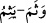
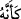
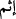

talil yapılmıştır. “İsm” cezayı gerektiren günah anlamındadır. Sa’dî Müftî der ki:
Hemzesi vav’dan dönüşmüş olup kırmak anlamındaki (__WORD__) kökünden gelmektedir.
Sanki günah amelleri kırmaktadır. “Bu anlayışı Mutezile’ye meyil değil mi?” diye
soracak olursan, derim ki: “Evet, teşbih olmasaydı yani (__WORD__) ifadesi olmasaydı dediğin
doğru olurdu.” Yine o der ki: “Bu hususta musannif Zemahşerî’ye tâbi olmuştur. Bu
görüşe, vâvî olan (__WORD__) kelimesinin hilafına (__WORD__) kelimesi hemzeden hâlî olmaz ve
hemzeli olan dördüncü bâbdan, vâvî olan ise ikinci bâbdan olduğu şeklinde itiraz
edilmiştir.” Fakîr [Bursevî] derim ki: Zemahşerî bizzat kendisi el-Esâs kitabında bu
kelimeyi hemze bâbında zikretmiştir.
Âyet, zanların çoğunun günah kabilinden olduğuna delâlet etmektedir. Çünkü şeytan
nefse zanları ilkâ eder. Nefis de zann-ı fâsidde bulunur. Yine âyet bazı zannın da günah
olmadığına delâlet etmektedir. Bu zannın hakikatidir. Nefis kabîlinden değil bilakis
sahih firaset yoluyla olur. Buna göre kalp yakîn nuru ile gaybda cereyan eden şeyi bilir.
Hadiste şöyle geçer: “Her ümmette muhaddesler veya (ravi şekke düşmüştür)
muravva’lar vardır. Eğer bu ümmette varsa muhakkak Ömer onlardan biridir.”[198]
‘Muhaddes’, görüşünde isabetli kimse demektir. Sanki hâdise kendisine bildiriliyor.
Muravva’ ise hadisenin (künhünün) kalbine ilka olunduğu kimseye denir.
Fethu’r-rahman’da der ki: Kişinin hâline bakmadan zanna yönelmek doğru değildir.
Eğer sâlih biri ise ufak bir tevehhümle sû-i zan yapılmaz; bilakis bu hususta ihtiyatlı
davranılır. Hayıra yoracak bir yol bulamayıncaya kadar sû-i zan yapma!
Sâib der ki:
Denizin kucağında sel suları tertemiz oldu,
Rabbânî tecellî ile açılmış bir sînede kirlilik ne arar?
Fâsıklardan zuhûr eden hallere göre kendilerine zanda bulunabiliriz!
İmam Gazâlî Minhacü’l-âbidîn kitabında der ki: “Bir insanın zâhiri salâh ve setr ise
onun namazını ve sadakasını kabul etmede senin için bir beis yoktur. Zaman bozuldu
deyip de araştırma yapman gerekmez. Bu, söz konusu Müslüman kimse hakkında sû-i
zandır. Oysa biz müminlere karşı hüsn-i zanla memuruz.”
Hadîs-i şerîfte buyrulmuştur ki: “Kime istemeksizin bir rızık gelir de onu reddederse
o kimse o rızkı Allah’a karşı reddetmiş olur.” Hasan demiştir ki: Ümerânın
hediyelerini ancak gösterişçi veya ahmaklar reddeder. Seleften bazıları bütün ihtiyaçları
için borç alırlardı. Kendilerine gelen hediyeleri de kabul edip onunla borçlarını
öderlerdi. Buradaki hile/çözüm mutlak bir malla satın alıp sonra istediği herhangi bir
malla onun ücretini ödemektir. İmam-ı Azam’dan gelen bir rivayete göre sultanın veya
zalim kimselerin yemeğini yemek durumunda kalan kimse araştırır; eğer kalbine helal
olduğu düşüncesi gelirse yer; gelmezse yemez. Çünkü Efendimiz (s.a.) “Kalbine
danış”[199] buyurmuştur.